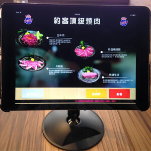

「約客頂級燒肉」導入案例
發表日期：2015 / 09 / 01
「約客頂級燒肉」的品牌大使「YORKSHIRE 約客夏男孩」是由3個喜歡日式燒肉的大男孩所組成，他們3位並為店宣拍攝形象廣告。而「YORKSHIRE 約客夏男孩」的廣告台詞是「約客夏，約客一下！」，亦即他們要以型男色相爭取女客上門。每個周末約客夏男孩，特別駐店來擔任活動大使，親自幫客戶服務，讓每一位顧客賓至如歸，下次可以再約更多朋友來。
「約客頂級燒肉」強調，食材皆是澳洲9+等級空運來台生食等級的澳洲和牛，平均每人消費 1 千元左右，店內更設有 3 間豪華 VIP 包廂，提供頂級客用餐隱私。因為有型男帥哥提供來店客「壁咚」服務，餐廳強調除了視覺與味覺外，並很有「感覺」。
「約客頂級燒肉」號稱廚房耗資 3 百萬打造，為了讓頂級食材有更好的空間處理，其中高級和牛食材部份，廚房更特別設置熟成冷藏室，讓客人點的每一盤精緻燒肉維持食材新鮮品質，保持澳洲和牛產地現送的頂級口感。店內長型吧台旁更設製三百公分長的大魚缸，帝王蟹、松葉蟹、扇貝、明蝦、鱈場蟹等，讓顧客現選現撈海鮮食材，每一台桌上還提供iPad平版系統點餐，讓服務及點餐迅速更加方便，店內所有服務生皆專業訓練，將提供顧客前所未有多的頂級服務，全新三覺合一的新感受，不只抓住顧客的胃，更抓住顧客的心。(中時電子報)

除了有帥哥服務外，更讚的是「約客頂級燒肉」使用的就是宣揚電腦的 BMenu iPad 點餐 POS 系統，整合點餐、廚房、結帳、支付一貫流程，咻一下就 OK 囉！
想讓你的服務更有味道嗎？ 找『宣揚電腦』替你包裝吧！